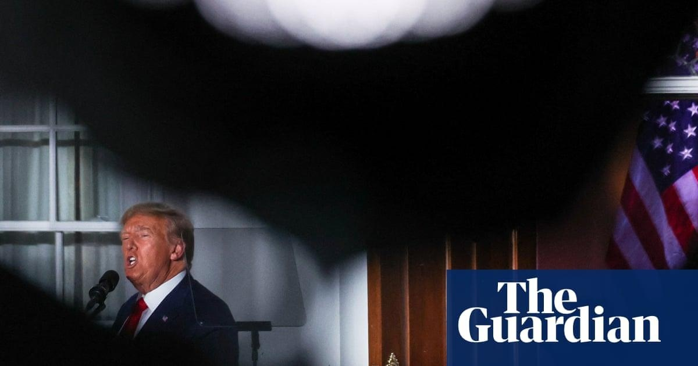

Trump rivals struggle for attention after classified documents indictmentDonald Trump is contending with grave criminal charges for violating the Espionage Act and obstruction of justice but the immediate political damage has, jarringly, been felt most acutely not by the defendant but his other rivals for the Republican presidential nomination. The indictment of a presidential candidate once upon a time would have been a major vulnerability in a Republican primary contest. Damaging details about the illegal activity might have been seized upon as examples of unfitness for office and the legal battle seen as a distraction. Maddeningly for Trump’s rivals, the biggest winner politically – so far at least – of the indictment against Trump in the Mar-a-Lago documents case appears to be Trump himself, who has been the singular focus of news coverage and embraced as a martyr by much of the wider Republican party. Advisers for other campaigns have privately complained that Trump has sucked up so much oxygen that their candidates cannot get attention unless they agree to discuss Trump and his chances of beating them as though they were any other political commentator. The complaint has become so widely discussed that some Trump aides have heard about it and developed their own test: whether they could remember what any other candidate had done or said that day. The day of Trump’s arraignment, a person familiar with the matter said, they could not. But what has been even more perilous for Trump’s rivals has been that when they have been booked to appear on cable news shows, according to their advisers, they have to remember to be careful to give answers that they are certain will not alienate Trump’s base. The careful dance of having to talk about Trump to get coverage, but also defend Trump while running against him, was on clear display after the former president was arraigned on Tuesday in the Mar-a-Lago classified documents case in Florida. The rightwing Florida governor Ron DeSantis, Trump’s closest rival in the 2024 presidential race, criticized the ex-president but only subtly, and his wider comments on the case seemed to be a general condemnation of a perceived “weaponization” of the justice department. Trump’s former vice-president, Mike Pence, stayed in the middle after the charges in the indictment became public. He called Trump’s actions about hoarding national defense information – including US nuclear secrets – indefensible but went no further in his criticism. The South Carolina senator Tim Scott and Trump’s former ambassador to the United Nations Nikki Haley gave mixed answers, initially condemning the justice department for charging Trump before later acknowledging that the evidence in the indictment was deeply problematic. The lukewarm and uncertain responses opened the path for Vivek Ramaswamy, the wealthy entrepreneur also in the Republican race, to get some attention for himself by coming out in support of Trump but in terms of whether Trump should be pardoned if he were to be convicted. His tweet about potentially pardoning Trump summed up the moment: none of the other candidates could give a definitive answer to that, either. The fallout from the first and second indictments has so boosted Trump’s popularity among primary voters and challenged every other Republican candidate in the 2024 race that Trump’s advisers believe it could help carry him to the Republican nomination. Before the indictment in the documents case arrived, Trump’s advisers were hoping that Republican primary voters might dismiss it as a partisan effort, as Trump has repeatedly claimed, giving him a polling and fundraising boost, people close to the campaign said. The boost for Trump turned out to be larger than they expected. In a poll of Republican primary voters conducted by Morning Consult, Trump increased his lead over DeSantis by 4% after the indictment. Trump polled at 59% compared with DeSantis at 19%. The Trump campaign also said that it had raised more than $7m, including $2.2m at a donor event at his Bedminster golf club in New Jersey, in donations in the days since the indictment, more than it raised after Trump was charged in New York though the figures have not been verified. But more ominously for the Republican field, the indictment news cycle may carry Trump all the way to the nomination given the high probability of further charges stemming from criminal investigations over his efforts to overturn the 2020 election. The Mar-a-Lago documents case was his second indictment in two months, and Trump could be indicted for a third time in Georgia by the Fulton county district attorney, Fani Willis, who has been scrutinizing Trump’s election interference in the state. Charging decisions in the Georgia case are expected to be announced starting in August, the Guardian has previously reported based on Willis’s instructions to staff to work remotely in that period – just weeks before the first Republican presidential debate, scheduled for 23 August. |
 |